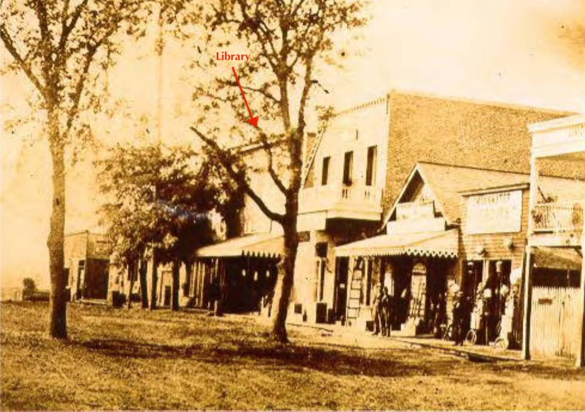
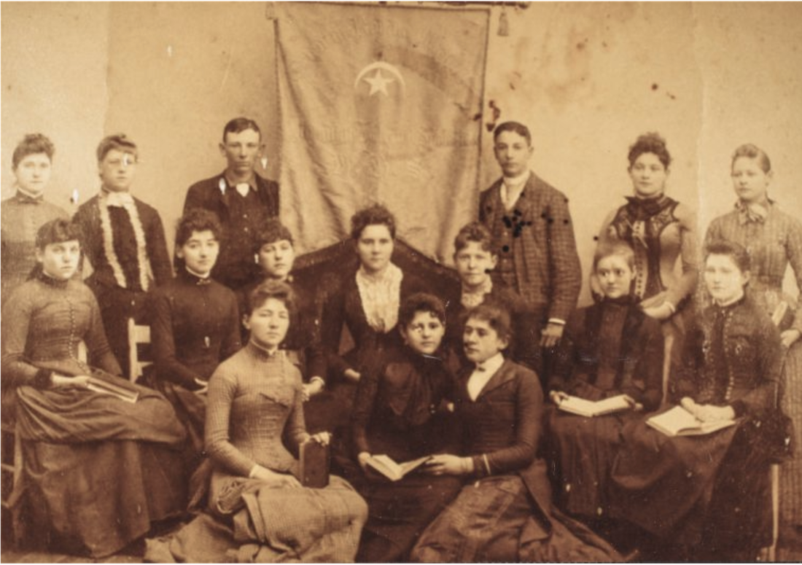

A Social History of the Healdsburg Public Library
|
Note: an earlier version of this article was originally published
in the Russian River Recorder Fall 1988, issue 34 It seems a simple thing to us now, a public library, where almost any man, woman, or child can discover what they will between the pages of a book—for free. But the founding of such a library in Healdsburg was the result of several separate attempts that involved such controversial issues of the day as women's rights, the Temperance movement, democratic ideals, and capitalist vs. progressive politics. As in many enterprising infant towns in California in the 1850s, Healdsburg's founders tried to start everything at once. So the early roots of our library cannot be separated from the first attempts to found churches, schools, cultural societies, and newspapers. All of these early efforts aimed at the moral, educational, and cultural uplifting of Healdsburg citizens. For a long while it was an uphill battle on this dusty frontier.
The earliest school in town was founded on the Cyrus Alexander ranch in connection with the Presbyterian Church in 1853. This same civic-minded man, the first white settler in northern Sonoma County, built another school for the town on land he owned called Pine Grove (now near Tucker and East Streets). These schools would constitute the first small library of texts amassed for the public benefit. A more ambitious undertaking was spurred by the arrival in 1857 of Roderick Matheson, an ambitious and highly literate school teacher, a native of Scotland. After a remarkably successful political career in early San Francisco, Matheson turned his attention to the intellectual improvement of this struggling community. He became one of the first teachers to join pioneer educator Erastus Scott, who erected an academy in 1857 at the present University and Tucker Streets, christened the Russian River Institute. The Russian River Institute had 103 pupils at the opening of its first semester in September 1857, and it was here that private tuition and donations began to form the nucleus of a small library that was eventually passed down to future generations. But Healdsburg was, after all, a small farming community, and the outlay for tuition to a private school was more than many local families’ budgets could bear. When Matheson initiated an even more ambitious project, the founding of a University, he and the University trustees bought out the financially foundering Russian River Institute. Matheson modeled this new college after the successful Farmers’ and Mechanics’ Institute which he had helped found in San Francisco. The optimistic trustees named it the Agricultural and Mechanical University of California and commenced classes in November 1859. In fact they had to close the old school down for one month before the opening, so as not to confuse the town and the student body. This was one of the few such institutions existing in California at this time. Such universities had been the dream of many of the founding fathers of the United States and with the help of federal legislation, their dreams took shape in California as the University of California system, evolving first as a partnership with Matheson’s Farmers’ and Mechanics’ Institute in San Francisco. 
The first library in Healdsburg formed as a part of the Russian River Institute, built in 1857 on University Street near Tucker.
 The Casket Vol. 2 #20, 21 June 1859. (Sonoma County Library, original Healdsburg Museum) The Casket Vol. 2 #20, 21 June 1859. (Sonoma County Library, original Healdsburg Museum)
Along with the birth of a library came the formation of the first town newspaper and literary digest, a Russian River Institute student publication, in February 1858. Ominously titled, The Casket—a reference to the treasures it held, rather than corpses—this first publication was a combination of local news and student essays, prose, and poetry. Every article, boasted the editors, ... we believe to be original in conception and composition. Even then the students were beginning to perceive the unique character and history of Californians. In a June 21, 1859 edition a student enthused over the elegant Spanish additions to the Californian's language, and in a humorous self-character sketch he wrote: He [the Californian] throws himself upon a [church] seat, where no restraint compels him to sit upright, but either stretching himself full-length or displaying his leggings and boots on the seat in front of him, he turns over his fresh quid of tobacco, and spits sociably all over the floor ... Such was the medium in which literary pursuits took shape in early Healdsburg.
Although the University trustees invested heavily in the new school, the financial reports of 1860 showed that liabilities exceeded assets. To this the University Ways and Means Committee (consisting of Matheson and William Harrel) responded: All institutions of a literary and scientific character, that have any prominence in the world, unless endowed by the dying millionaire or royal bequest, have had, in their infancy to struggle for their very existence. To Matheson their endeavor to open the minds of Healdsburg's youth was yet in the womb of futurity. The father of Healdsburg's first true library died a Civil War hero, Colonel of the First California Regiment, two years later. The college he helped to found continued until 1908 under various names and proprietorships. The school library took on a life of its own. The town's first organized group of bibliophiles, the Sotoyome Literary Society, was founded in October 1863. The group of ambitious young men who made up the Society, many of whom were graduates of the college, took over ownership of the old University library, and held meetings on the campus grounds. At their first meeting the subject of debate was: Resolved that George Washington was a greater general than Napoleon. George was judged the winner, of course. Their second meeting was spent arguing for which a young man would go farthest, a young lady or money? Not surprisingly, these young men, four of whom later became attorneys, decided that money won out. The Sotoyome Literary Society was joined by other literary societies in the years that followed: the Mill Creek Literary and Debating Society in 1869, the Alexander Literary Society (students of the Alexander Academy, a descendant of Matheson's University) in 1870, and the Healdsburg Literary Society in 1878. The purpose of such early societies was to bring to bear the member's literary knowledge on the pressing questions of the day, and to foster the love of books. How effective was the Public School System in California? Should the United States own and control railroads and telegraphs? These were relevant questions in the 1870s, and some still are today.  The first public library outside of a school in Healdsburg was located in the upper story of a building on the 300 block of West St., likely in the location shown here in 1868.
Healdsburg's Masonic Lodge instigated the first Public Library Association in February 1869. To their eternal credit, the first trustees, S. M. Hays, W. S. Canaan, D. Bloom, J. S . Shafer, and George Miller set out a lofty purpose: to establish a library and reading room together with a collection of natural curiosities, open to all who contribute. Thus this combination library and museum of "curiosities" would "not share the fate of independent libraries, which flourish for a short time and fail—or so hoped the local newspaper editor.
The independent libraries of which the editor spoke were private libraries. The idea of a public library, supported by member subscription, began in the U. S. as early as 1731 with Benjamin Franklin's Library Company of Philadelphia. The idea traveled with the advancing Western frontier, beginning with the founding of the Western Library Association in 1804. This last was often called the Coonskin Library, as subscribers often paid in animal skins. In 1848 radical Massachusetts passed the first "free library" law, with California following in 1879. The 1869 Healdsburg Library Association, using the subscription system, was given a ten-year lease for a room on the upper story of the Masonic Building on the 300 block of West St. (now Healdsburg Avenue). Carpets and a chandelier were bought and a librarian hired, all through donations. This first official public library was bequeathed the original collection of books from the old Russian River Institute. It seems that only one year before, a professor, J. W. Anderson, who was retiring from the old Institute, became concerned about the scattering of the books. He purchased them from the Sotoyome Literary Society, and then turned them over to the Library Association. 
If At First You Don't Succeed
Early reports on the new library were very positive, with various theatrical benefits supporting the project. The first library apparently failed however in the early 1870s, and in 1876 history stuttered, and the entire formation process was repeated. Once again, it was the Masonic Lodge that was the impetus for the new library. This time they offered their second-story room with a ten-year lease of $12.50 per month (first six months free!), to a Public Library Association which did not exist at the time. Such an association was speedily formed by a group of 28 men and 5 women who passed bylaws modeled after the Mechanics’ Institute Library of San Francisco. Their avowed purpose was the mutual improvement of its members and the cultivation of a friendly feeling. An elected board of nine male officers publicly proclaimed the obligation of Healdsburg ladies to plan fundraising festivals and solicit donations. The grand opening of the library on May 2, 1876, brought many visitors to view the newly carpeted 1,540 square-foot room with hardwood finish, lit by three lovely gas chandeliers. Three hundred "choice" books lay on handsome tables. These books, that same original library of the Russian River Institute enlarged by later purchases, had been returned to its donor, Prof. Anderson, after the failure of the first library. He in turn sold them to C. E. Hutton, the principal of the Alexander Academy, with the understanding that they would be kept for a town library. Hutton honored his promise by turning them over to the Library Association in 1876. This 1876 library was open to all for reading without a fee, but only members who subscribed at $1 per quarter could borrow books. George Hudson was hired as librarian for a salary of $15 per month. Despite an auspicious beginning, the second attempt to operate a public library on a subscription system had failed by 1879. Perhaps coincidentally, the old University, now known as the Healdsburg Institute, failed in the same year and was taken over by the Seventh-day Adventist Church. The editor of the Healdsburg Enterprise newspaper bitterly blamed the failure of both projects on mismanagement by their respective boards, who were unfit, uninterested businessmen who lacked education. He recalled that the citizens had hailed that library opening in 1876 as the ... day when the pernicious influences of the barroom and its gilded sign of enticement would be dimmed by the healthy atmosphere of the Library Hall. Yet the young people who ventured into this haven were now met by stern (apparently female) faces who reprimanded the slightest infraction. With no fire in winter, the editor claimed, the library patron was alternately ...in direful pain or unrequited fear, during his short stay. Although almost $1,000 was spent on the enterprise, the most recent management made the barroom look inviting by comparison. This shocking editorial prompted a reply from the most recent female librarian. Taking exception to his comments, she launched into a very amusing and erudite treatise on women's rights. Until that time the town librarians had been exclusively male. In Healdsburg, she raged, women were only thought fit to be mothers or school marms. A woman is not the lesser man, she said, not men spoiled in the making, but beings gifted on their own. She closed with the challenge that the problem of the day is not what to do with our gifted and capable women, but what to do with our worthless and incapable men.  Healdsburg High School Athenian Literary Society May 22, 1889.
Ann Amesbury (President, located in front row, first on left), Ollie Dutton (Vice-President), Bert Haigh (Secretary), Georgia Zane (Treasurer), Maggie Powell (Critic), Carrie Moulton (Doorkeeper), Addie Stites (Usher), Leonora Gates (Usher), Julius Fried, Bertha Fried, Clara Zane, Della Zane, Annabel Marshall, Junia Cook, Edith Soules. (Sonoma County Library)
Women and Literature in Healdsburg
Back when book learning and intellectual debate were thought to be manly arts, the membership of the first literary societies was almost exclusively male. By the 1890s however women had infiltrated and virtually taken over the societies. This coincided with increased female attendance at the local high school and college. As early as 1859 the University had 45 girls and 69 boys, but according to the school newspaper, …owing to the continuance of the term after the haying season had commenced, a great majority of the young men were compelled to leave school to attend their farms. The local public high school, established in 1888, consistently had a majority of female graduates until the 1920s. Once again, the practical concerns of a small farming community infringed on the pursuit of the intellectual life of its young men. Girls might be spared from the farm until marriage, but the boys were needed for their strong backs. The importance of agriculture partially explains why Healdsburg literary societies were predominantly female by 1900. At the same time, the fight against slavery in the U. S. during the first half of the 19th Century had drawn many American women into political activism. For the first time women became an organized political force. Once aroused, women also began to rankle at the more subtle chains that bound the gentle sex. By 1879 feminism, in the form of a feisty librarian who gave as good as she got, had finally reached Healdsburg. The resistance to female liberation and suffrage (the right to vote) in Healdsburg was also evident in the 1870s. Aside from the editorial attack on the female librarian, a typical subject of debate for one of the all-male debating societies in 1876 was whether the Women's Suffrage Movement is Degrading to Women. These males decided in the affirmative. If at Second You Don't Succeed
It is uncertain how long Healdsburg went without a library after 1879. The local newspapers from 1880 to 1886 have been lost to history. Later press comments indicate that the Women's Christian Temperance Union, a group devoted to banning the use of alcoholic beverages, started up a reading room somewhere in town in 1885. It is known that a public library was planned for the commodious City Hall that was completed in 1886. But it was not until January of 1889 that the City Trustees granted the Ladies now conducting the Public Reading Room, the use of the west room on the second floor of the City Hall (approximately 50 feet by 30 feet) free of charge. The ladies in question were the Women's Christian Temperance Union, and the Public Reading Room that they dedicated in March of 1889 was praised by the local press. The City Hall has begun at last to be utilized. Better late than never, groused the editor of the Enterprise. The community backed this third (or fourth) attempt, and the fledgling Healdsburg Tribune newspaper began a fundraising drive in 1893 to raise $100 for a 30-volume set of Encyclopedia Britannica, a dictionary, and various historical works and maps. How the library got along without a dictionary to that point is unknown, but it is interesting to note that better science and history texts were an aim of almost every fundraising drive during this era. As late as 1908 a letter to the editor advised fathers to keep their sons out of evil saloons by encouraging them to read history. Especially helpful, this wise man proclaimed, was the study of local history, for learning to view his own area with perspective would affect his view of the world. Liquor and Libraries
A report given on the Women’s Christian Temperance Union Library in 1895 showed that electricity was donated by the local franchise and that other operating costs amounted to $14 per month, offset by the subscription of members. Mrs. M. J. Prunk was the undisputed—and unassailable—head librarian and concurrently, the president of the W.C.T.U. There was a strong connection in many citizens' minds between sobriety and a love of literature. That positive connection was mentioned anew with every attempted library in Healdsburg until the 1890s. Yet that connection was not always a positive one. In 1893 the Tribune felt obliged to come to the defense of the library and denied that there was a connection between the Temperance Movement and the management of the public library. He claimed that the public was being told to stay away because of the views of the W.C. T.U. Just one year later the city took over library operations, and the Tribune noted that attendance increased immediately. He hinted that this could be attributed to the fact that many people did not agree with the W.C.T.U.'s philosophy. Local hostility to the movement to ban alcohol may have been the motivating factor for the City's takeover of the library in 1896. Like the municipal water fountain (see The Plaza), the public library had become a symbol of sobriety to many. In 1908 a prominent citizen proclaimed that Healdsburg was waking up to the necessity of ridding itself of the saloons and gambling dens which disgrace it in the eyes of all decent people. A library, he said, promotes mental and moral culture. The writer himself was saved from a life of sin by books, and he claimed that Andrew Carnegie was put on the road to success in the Pittsburg Public Library. 
Women's Christian Temperance Union members from all the Christian churches in Sonoma County met at the First Baptist Church in Graton in 1910. The W.C.T.U. often supported libraries as a deterrent to alcohol addiction. (Sonoma County Library)
 Industrialist turned philanthropist Andrew Carnegie, circa 1910. (Keystone-Mast Collection) Industrialist turned philanthropist Andrew Carnegie, circa 1910. (Keystone-Mast Collection)
Free For All
When the City took over the library on September 9, 1896, they declared it a free lending library for all persons over 14 years of age. A Library Board of Trustees was appointed and a special tax of 5¢ per $100 assessed value was instituted for its support. All of the trustees appointed were prominent men, and a male librarian, J. B. Leard, was hired. City management seemed to improve the library's holdings and circulation almost immediately. A report in 1898 showed that monthly book circulation had risen in one year from 55 per month to 250 per month. Book holdings totaled 825. Two years later there were 1,575 library volumes, and a monthly circulation of 417. The Ladies Improvement Club renovated and cleaned the library rooms in 1901, and in 1903 the collection was converted to the Dewey Decimal System. By 1909 the now overcrowded rooms were circulating 1,075 books per month and the average daily attendance was 80. It was time to build a real public library. Carnegie To the Rescue The Healdsburg Library Board of Trustees may have asked self-made millionaire industrialist, Andrew Carnegie, for a grant of $10,000 to construct a library as early as 1906. The Tribune reported such intentions in March of that year. It was not surprising that Healdsburg wanted to be included on the list of Carnegie grant recipients. Even before he published his controversial book, The Gospel of Wealth and Other Essays in 1900, Andrew Carnegie had been busy giving away his fortune. The man who dies ... rich dies in disgrace, proclaimed Carnegie. Carnegie’s particular interest in gifts for construction of libraries began in 1881 with a gift to his birthplace in Scotland. Libraries appealed to Carnegie's work ethic philosophy. The fundamental advantage of a library is that it gives nothing for nothing. Youths must acquire knowledge themselves. But in a public library, the millionaire's son has no advantage over the pauper's son, an important concept to this self-educated Scottish immigrant. By 1917 Carnegie had made grants for the construction of 2,509 free public libraries in the English-speaking world, 1,679 of which were in the United States. These gifts were in addition to his other philanthropic projects. By the end of his life Andrew Carnegie had given away 300 million dollars. Each applicant city had to meet Carnegie's eligibility requirements, which included a minimum population and tax base. His gifts were also contingent on each city providing a building site and annual maintenance (totaling at least 10% of the gift). The town also had to provide the books to fill the building. In 1909 Carnegie, then living in his Skibo Castle in Scotland, informed the Healdsburg Library board that their request for $10,000 was granted. Preparations got underway quickly. The old Flack property at Matheson and Fitch Streets was purchased in January 1910 for $2,125. In February, Petaluma architect Brainerd Jones was chosen to design the new library. Jones had designed the Petaluma Carnegie Library in 1903, and had designed several residences in Healdsburg. He would later design the impressive Frank Passalacqua house at 726 Fitch Street. By 1908 Andrew Carnegie had become concerned about the frivolous ostentation and inefficient planning of some libraries that he funded throughout the U. S. In 1911 his organization published a pamphlet with architectural guidelines for construction. But Healdsburg did not need such prodding to be economical. Petaluma had added substantially to their Carnegie endowment of $12,000 to construct a grand edifice with coursed stone and a stained-glass skylight, spending a total of $16,000 in 1903. Healdsburg, on the other hand, requested and got a reinforced concrete neoclassic structure for exactly $10,500. That was only 5% over their Carnegie endowment. To reach this strict budget Jones's original plan was altered to exclude excavation for a sunken ground floor, economizing by raising the plan to ground level. Jones was nevertheless able to design a charming, dignified building with such detailing as Douglas fir columns in the interior and an extensive system of built-in bookcases. In the end this simple library was more reflective of Healdsburg's collective attitude in 1910. The original floor plan called for a Receiving Room and a Future Social Hall on the ground floor. Above, on the main floor, a Book Room, Children's Room, Librarian's Committee Room, and a Reading Room are shown. Jones thoughtfully provided two Hat Alcoves on either side of the main entrance and a galvanized metal Fumigating Locker in the Committee Room for sterilizing books after use by those with infectious diseases. One of the items in Jones's original architectural plan that was cut during construction was a pair of five-foot tall bronze light standards that were to be placed on either side of the monumental steps. A fundraising drive, initiated in 1912 to plant a lawn at the site and install these standards was only partially successful. It was not until 1916 that Esther Rosenberg donated the money for the street lamp installation. They were apparently removed because of electrical problems in the 1960s. Unfortunately we have been unable to locate them so that they might be restored to the building. Local contractor Frank Sullivan, was awarded the bid for construction for $9,473 in October 1910, and all subcontracts went to local businesses. Although construction began immediately after award of the bid, it was not completed until May 1911. Politics, Celebration and Taxes
By today's standards, the construction and opening of the Carnegie Library received very little attention from the Healdsburg Tribune. This may have been due to the political philosophy of its editor, progressive reform Republican Alexander Crossan. In one of the few references he made to the Carnegie gift, Crossan grudgingly stated on May 17, 1911: And it should not be forgotten that the generosity of Andrew Carnegie made this magnificent structure a possibility in Healdsburg. The accumulation of such vast wealth in the hands of one man is certainly against the interest of popular government, but it is a great blessing if the man that accumulates it can see that duty calls him to bestow his fortune for the benefit of the community. A planned benefit concert by the Brewster Herold Concert Company and Lytton Orphanage Band for the opening of the new building was held across the street at the Adventist Church on May 25, 1911. It was hoped that the library would be finished and open to the public on that night, and it was hoped that the benefit concert would pay for the construction cost overruns of $500. At that grand celebration, performer Brewster read a poem especially penned for the occasion by Healdsburg poet and historian, Julius Myron Alexander. While hand-painted slides of the library were projected on the wall, Brewster dramatically intoned the last verse: Oh building! Guard safe our jewels dear; Oh books! Our friends through every year; God keep thee safe, though storms may ride, To us be a light, a beacon guide. Column and building and books for each, Live! Live for the age, for Eternity teach. On a more practical note, local citizens were taxed at a rate of $1.26 per $100 of assessed valuation in that year to pay for the purchase of the building site and other costs. However, there are no recorded protests of this special tax or the construction cost overruns. Healdsburg was uniformly proud of its new, free, public library. Epilogue
Over the years the library patronage, circulation, and book collection grew. Some of those original books from the old Russian River Institute collection may even have survived the years. The library remained under municipal control until it was absorbed into the County library system in the mid l970s. That development, as well as the decision to build a new library at 139 Piper Street in the 1980s, involved much indecision, controversy, delay, and group effort. By the time that new regional branch of the library was built in 1988, Healdsburg was fast becoming a center for the wine industry in California and tourism was a growing pillar of the local economy. Due in large part to the efforts of Geyserville writer, Millie Howie and Healdsburg wine historian Joe Vercelli, a Sonoma County Wine Library became the focus of the Healdsburg branch. Early on well known architect and Alexander Valley resident John Carl Warnecke was involved in site selection for the library, but the final plan was drawn by Ukiah architect Max R. Kappeler. The Sonoma County Wine Library opened in February 1989 in an 11,700 square-foot building, costing $1.7 million of state, county, and city funds. When the library finally moved out of the Carnegie building in 1987, it was offered to the Museum. After a successful fundraising drive that I had the honor of designing and managing, spearheaded by the wonderful Museum Board of Trustees, a city-appointed board, along with a specially formed committee of prominent members of the community and the Healdsburg Historical Society, the Carnegie Library was fully restored and remodeled and reopened as the Healdsburg Museum, Edwin Langhart founder, in 1990. Early in the fundraising process, Museum Board Trustee Thelma Frey approached her employer, Alexander Valley resident Edward H. Gauer, who pledged a matching grant of $110,000 to the project. This was an added catalyst that brought our drive well over its goal. Literally hundreds of small donation came in as well, and I remember the excitement of opening each envelope as we neared, and then exceeded, and then far exceeded our goal. The Healdsburg Museum was a municipal institution from its founding in 1976 until 1993, when a confluence of conservative political thought in the leadership of both the City of Healdsburg and the Healdsburg Historical Society led to its privatization. While the building and the museum collection are still owned by the City, operations were taken over by the Healdsburg Historical Society (now the Healdsburg Museum and Historical Society). We look back now to those many struggles in the early years to found a public library, and we are glad that someone persevered. Since its first opening in 1911, the Carnegie Library building was both a place of learning and a place to meet to share ideas. Now serving as a museum and historical research center, It still fulfills those goals of Healdsburg’s pioneer Public Library Association in 1876, which was the mutual improvement of its members and the cultivation of a friendly feeling. 

Healdsburg Regional Library and Sonoma County Wine Museum at 139 Piper St.
BIBLIOGRAPHY
Booklets/ Periodicals Healdsburg Centennial 1867–1967; City of Healdsburg. 1967 Clayborn. Hannah; "Colonel Roderick N. Matheson: A Civil War Hero From Healdsburg" in the Russian River Recorder. Healdsburg Historical Society; July/ August 1981 Clayborn. Hannah; "Healdsburg Schools 1853–1982". in Russian River Recorder, Healdsburg Historical Society, April 1982 Unpublished Reports Kaiser, Barbara, "The St. Helena Library and Andrew Carnegie", B.A. Thesis, Sonoma State University, 1980. Kortum. Lucy. "National Register Nomination for Healdsburg Carnegie Library'", City of Healdsburg. 3/11/88. Original Documents Constitution, By- Laws. and Minutes of Meetings of the Agricultural and Mechanical University of California Healdsburg: May 12. 1859 to Sept. 20. 1860 [Healdsburg Museum] Minutes of the Healdsburg City Board of Trustees. Healdsburg. Calif.; 1876–1912. [Healdsburg City Hall] Plans for the Healdsburg Carnegie Library, Brainerd Jones, architect. 1910; [Sonoma County Library] Sandborn Fire Insurance Maps of Healdsburg. California, showing Healdsburg, City Hall. 1884 and 1911 [Healdsburg Museum] Newspapers: The Casket, 6/ 21/1869. [Healdsburg Museum] Russian River Flag: 1869: 2/ 4, 2/18, 5/26; 1876: 2/ 4. 3/ 9, 3/16, 3/30, 4/ 6, 4/13. 4/20. 4/27, 5/4. 5/25. 6/8, 6/22; 1879: 11/13. Healdsburg Enterprise: 1878: 2/28; 1879: 10/30, 11/6, 11/13, 11/20: 3/13/1889, 6/16/ 06. Healdsburg Tribune: 2/ 26/1891, 6/ 2/1892, 1/5/1893, 1/12 /1893, 10/17/1895, 12/12/1895, 2/20/1896, 9/24/1896, 12/3/1896, 10/13/1898, 11/22/1900, 1/10/10, 12/ 5/ 01, 11/16/ 05, 8/9/06, 3/1/06, 11/28/07, 3/26/08, 2/5/09, 8/20/09, 4/27/10, 10/12/10, 5/17/11, 5/24/11, 5/31/11, 4/11/12, 7/25/12, 11/21/12, 2/17/16, 7/5/17, Diamond Jubilee Edition 8/26/40, 8/24/83, 6/19/85. |